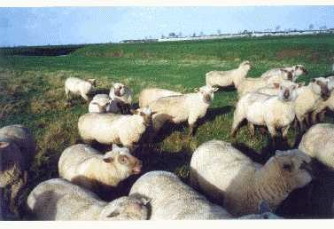

Mouton vendéen
Les agneaux naissaient l'hiver dans une bergerie ouverte au soleil, très bien aérée et tétaient, en toute liberté, le lait de leur mère.
Mon troupeau, repris sur place en 2000 par Alain POYAU, était sélectionné en race pure depuis 1966.
300 brebis, sur les 400, étaient filles de béliers élites ou améliorateurs boucherie -AMBO-, testés à la Station de Berry-Test, près de Bourges, dont je fus président de 1989 à 1996.
L'insémination artificielle était pratiquée régulièrement sur une partie des brebis avec la semence des meilleurs béliers testés favorablement.
La contractualisation est recommandée pour procréer des béliers, à la demande spécifique d'éleveurs-utilisateurs, pour améliorer les qualités bouchères des agneaux, mais aussi la prolificité et la valeur laitière des futures brebis.
Les agneaux de boucherie partaient dans le cadre du label "Agnocéan".
Troupeau au pâturage dans les prairies naturelles. En arrière- plan, les remparts de la citadelle de BROUAGE en 1999.
Le schéma de sélection :
Nos meilleurs agneaux mâles partaient à 2-3 mois à la station de contrôle individuel du Mouton-Vendéen à la Roche sur Yon pour être comparés pendant 100 jours aux meilleurs agneaux des autres élevages vendéens.
Les dix meilleurs étaient destinés au testage à Berry-Test, pour juger les qualités bouchères de leurs descendants, selon un protocole de l'INRA sur vingt mesures : l'épaisseur de la musculature, des os, du gras etc.
Sur ces dix béliers, quatre étaient classés AMBO - améliorateurs boucherie- et repartaient en centre d'insémination pour procréer la génération suivante.
La prolificité et la valeur laitière étaient testées en ferme sur les brebis. Les béliers d'insémination artificielle, dont les filles étaient supérieures à la moyenne, étaient classés "Améliorateurs" prolificité ou valeur laitière. S'ils cumulaient la qualification "AMBO" avec "Améliorateurs", ils étaient promus "Elites", qualification suprême.
Historique du monton vendéen
Contexte de l’élevage ovin vingt ans après la fin de la deuxième Guerre Mondiale.
Au 19ème siècle, le mouton était partout, des centaines de milliers dans chaque département, répartis par quelques dizaines dans toutes les fermes qui étaient axées d'abord sur l'autosuffisance de leurs membres et ensuite aux ventes de proximité.
Le mouton était facile à transporter, à abattre et à découper.
Les deux guerres du 20eme siècle et les pénuries qu'elles ont engendrées ont décimé les troupeaux. L'abandon des jachères et le remembrement puis les nouvelles méthodes de cultures ont permis de développer des productions telles que les vaches laitières et les céréales qui se sont faites au détriment du mouton.
Les troupeaux restants logeaient dans les bâtiments inutilisés pour les autres productions, pâturaient sur les plus mauvaises terres et leur conduite était confiée au moins doué de la famille.
L'image du mouton et du berger avec sa cape et sa pipe n'était pas valorisante.
Si cette production intéressait les jeunes que nous étions, c'est qu'elle était déficitaire et que nous savions que la production laitière allait être excédentaire dès 1965 et serait donc découragée par les prix.
Nous avons reporté sur l'élevage du mouton, ce que nous avions appris pour élever et nourrir les vaches laitières : cultiver l'herbe et stocker les excédents saisonniers pour nourrir régulièrement.
Les concours de tonte, l'utilisation des chiens de berger, l'amélioration rapide de la qualité de nos cheptels ont redoré l'image de l'éleveur de moutons, devenu un professionnel compétent et reconnu.
Cette prospective s'est avérée positive et nous avons eu vingt années prospères jusqu'à l'arrivée des agneaux anglais qui nous ont cassé le marché pendant vingt ans.
La fièvre aphteuse et la vache folle ont tempéré la pression britannique sur le marché des agneaux, sans toutefois retrouver les niveaux de prix des années 60/70.
Si le refus du Général de Gaulle de faire entrer les Anglais dans la CEE avait été respecté par la suite, nous serions aujourd'hui auto-suffisants en mouton et il n'y aurait pas eu de Brexit ...qui laisse toujours les agneaux anglais arriver… mais à dix ou vingt pour cent moins cher.
Jusqu'en 1965, la sélection animale avait été rudimentaire. Les éleveurs français de bovins et ovins allaient en Angleterre pour améliorer la conformation et les éleveurs de vaches laitières aux USA ou au Canada.
En 1966 la Loi sur l'Élevage a organisé l'amélioration génétique animale sur des bases objectives en rendant les contrôles laitiers et de performances neutres et indépendants et en organisant la diffusion du progrès génétique créer.
Elle a su faire la synthèse entre la rigueur des scientifiques et le pragmatisme des représentants des éleveurs désireux de ne plus dépendre des Américains ou des Canadiens pour améliorer la production de lait de vaches, des Sardes ou des Israéliens pour le lait brebis ou des Anglais pour donner plus de forme à nos bovins et nos moutons.
Les schémas de sélection, encadrés par la Loi sur l'Élevage, bénéficièrent très rapidement des progrès de l'informatique qui permirent le calcul très poussé des données collectées objectivement.
En moins de trente ans, la France a dominé l’amélioration génétique en lait de vaches, la race Lacaune a largement distancé ses concurrentes étrangères en lait de brebis. Comme nos collègues des autres races ovines françaises, nous sommes allés au Royaume Uni et en Irlande, vendre des reproducteurs Mouton Vendéen aux éleveurs Anglais et Irlandais victimes de leur sélection sur les concours qui favorise les animaux les plus gras, alors que nous avons utilisé, comme les autres races françaises, en plus du contrôle de croissance, le contrôle en station des futurs béliers, l’insémination artificielle pour le testage et la diffusion des béliers améliorateurs puis la Station de contrôle individuel Berry-Test pour tester sur descendance dix races françaises pour les caractères viande sans excès de gras.
Quand je traverse la France, je suis émerveillé de constater la qualité et la beauté des animaux dans les pâturages par rapport à ce que nous rencontrions il y a 50 ans.
Mouton vendéen
Dès 1965, des éleveurs de Charente-Maritime – dont Pierre Mercier, François Bertrand, Marius Tremblier, Jean Gautronneau et moi- avaient compris la valeur des moutons de Vendée, mais aussi la difficulté de trouver de bons béliers en l'absence d'organisation.
En juin 1966, avec Marius Tremblier et nos épouses, nous sommes allés à la foire de Luçon et nous avons rencontré les exposants, dont Maxime Chiron et Joseph Blanchard et nous avons déjeuné avec eux au restaurant.
Nous avons évoqué nos soucis Charentais et envisagé quel type d'organisation à mettre en place.
Alors, président de la Fédération des Eleveurs Ovins de Chte-Mme, j'ai organisé une réunion à Marans et une à Saintes pour établir un projet. Je me souviens du nom envisagé, le « Charvend », associant les deux départements. Il faut préciser qu'à cette époque les marais de Marans avaient quelques bons élevages de « Southdown-Vendéen ».
Et le 17 juin 1967, nous avons réuni l'Assemblée Générale Constitutive du Mouton-Vendéen au Foyer de Progrés de Luçon avec la bénédiction de son directeur Louis Gérard qui nous a toujours soutenus par la suite quand il est passé à la DDA.
Nous avons opté pour l'appellation « Mouton-Vendéen » qui était plus parlant que « Charvend » qu'il aurait fallu expliquer à chaque fois.
Nous étions seize éleveurs pour approuver les statuts, élire le Conseil d'Administration :
- Pour la Vendée : Maxime Chiron, René Hybert, Alain de La Roche St-André, Césaire Garnier ;
- Deux-Sèvres : Maurice Gonnord, Gilbert Braud, Henri Massicot ;
- Chte-Mme : Marius Tremblier, Edmond Tabourin, André Menet.
Et élire le Bureau :
- Président : André Menet,
- Vice-Président : Maxime Chiron
- Vice-Président : Henri Massicot
- Secrétaire : Marius Tremblier
- Trésorier : Alain de la Roche Saint-André.
Nous avons décidé que le contrôle de performances et les contrôles sanitaires seraient obligatoires pour participer à la sélection du Mouton-Vendéen.
Nous avons organisé les tournées de marquage que j'ai suivies en totalité accompagné d'un ou deux collègues pour essayer d'homogénéiser le classement des animaux. Nous avons visité 36 élevages avec 1571 animaux.
Nous avons constaté des différences importantes allant des brebis foncées du Sud-Vendée, plus claires et plus lourdes du Nord-Vendée et plus longues de Loire-Atlantique et des Deux-Sèvres.
Le problème majeur était que les éleveurs recherchaient les brebis avec du gabarit pour élever deux agneaux, avec de grandes oreilles et pour les béliers, ils les voulaient râblés, épais, formés comme les Southdown, avec de petites oreilles.
Nous avons bataillé avec les éleveurs pour leur expliquer que nous n'étions pas là pour faire du croisement, mais pour fixer une race. Et que nous devions choisir les béliers issus des meilleures brebis, les mères à béliers.
Au printemps 1968, pour bien se mettre d'accord, nous avons rassemblé à Pétré un assortiment des différents types et nous avons défini le standard de la race qui était reconnue en UPRA-Unité de Promotion de Race- par le Ministère de l'agriculture.
Nous enregistrions dans les élevages, à la main sur des cartes individuelles les origines des brebis et leurs productions, mais l'exploitation de ces données était compliquée.
C'est Guy Gaucher technicien de la Maison de l'élevage qui gérait le fichier, mais quand la facture est arrivée, elle était à dix mille francs au-dessus nos moyens.
En recherche d'économie, en1970, nous avons confié le fichier racial et celui du contrôle de performances au GPMA de Vendée qui travaillait en mécanographie sur des cartes perforées de 80 caractères seulement, mais c'était déjà un progrès extraordinaire par rapport à nos fiches manuelles.
Et puis très rapidement, l'informatique a pris le relais des cartes perforées.
Avec le contrôle de performances et l'informatique nous avons obtenu des progrès très rapides, au point de devancer les races plus anciennes qui ont traîné des pieds pour accepter la rigueur du contrôle de performances et ensuite pour l'informatique.
En 1970, nous avons créé le Groupement de Producteurs de reproducteurs – le GPMV- en complément de l'UPRA. Cela nous a ouvert les crédits de l'ONIBEV pour financer des actions et un technicien et ainsi permis de passer à la vitesse supérieure.
Le GPMV nous a permis dès 1971, d'accéder aux primes aux agnelles conservées, très conséquentes ce qui fait qu'à l'Assemblée Générale 1971, le trésorier, Alain de la Roche St-André qui avait, depuis 1967, géré tous les chèques et les comptes, s'inquiétait de présenter le bilan avec cinquante mille francs de trésorerie disponible.
Avec lui comme trésorier, puis ensuite Prosper Chaillou et Marius Tremblier comme secrétaire, il n'y a jamais eu de place pour le gaspillage.
La production allait bien et connaissait un fort développement.
En 1972, nous avions 64 élevages adhérents avec 180 brebis en moyenne.
Ce qui fait que quand il s'est agi en 1977 de construire la station de contrôle individuel et les bureaux, nous n'avons pas eu de problème de financement.
Nous avons cherché longtemps un endroit pour construire, rien ne nous convenait et nous avons accepté la proposition de l'École des Etablières de construire sur un de ses terrains avec un bail de 25 ans. C'est long 25 ans, mais 2002 est passé et 2027 pas si loin. Jusqu'à maintenant, nous n'avons pas eu à le regretter et la proximité de l'École avec ses rotations d'étudiants avait aidé à nous décider en 1977.
Schématiquement, de 1967 à 1977 nous avons sélectionné surtout la prolificité, la valeur laitière et le gabarit qui va avec.
De 1977 à 1994, la qualité des carcasses, avec l'IA, Berry-Test, le testage sur la descendance.
En 1985, le Concours Général de Paris organisa un concours de carcasses ovines.
Dès la connaissance du règlement du concours, en 1984, nous avons évalué les gains journaliers des agneaux pour arriver au poids idéal à la date du Concours et nous avons calculé la date idéale des IA que nous avons faites pour être prêt au bon moment.
Dix races à viande y ont participé, dont Texel, Ile de France, Charollais, Suffolk, etc. Avec chacune le même nombre d'agneaux.
Sur dix races, nous avons remporté les quatre premiers prix, plus le premier prix en croisement sur Lacaune.
Les neuf autres races se sont partagées les six prix restants et n'ont jamais voulu renouveler l'expérience.
La réputation du Mouton-Vendéen était en train de se construire, mais là ce fut la consécration officielle.
Nous avions commencé à exporter des reproducteurs en Angleterre et en Irlande et cela s'accentua.
Nous vendions les reproducteurs trois à quatre fois plus chers qu'en France et le GPMV prenait en charge les frais, mais récupérait la moitié de la plus-value.
La progression de la base de sélection a duré jusqu'en 1985, quand les agneaux anglais sont venus casser le marché.
Nous avons eu 130 élevages et plus de 20.000 brebis en sélection, plus 130 élevages au Royaume Uni et en Irlande.
Nous en avons ensuite perdu la moitié en dix ans, mais les bonnes souches ont été préservées.
En sélection, il faut se fixer des priorités pour être efficaces :
- 1967/1977 : productivité des brebis : prolificité et croissance des agneaux ;
- 1977/1994 : qualité des carcasses.
Quand est arrivée la tremblante, cela vous a permis de vous consacrer totalement à son éradication.
Il est évident que nos rapports avec l'Administration ont toujours été constructifs.
Le soutien sans faille de Louis Gérard à la DDA de Vendée,
- De M. Feige du Ministère de l’Agriculture,
- Du Professeur Charlet, sommité mondiale de l'Élevage,
- De Bernard du Payrou et de André Besselièvre à l'ITOVC,
Nous ont permis de faire reconnaître la race dès 1968 et de créer le GPMV et ainsi nous permettre d'accéder aux financements nationaux. Je leur en suis reconnaissant.
Mes remerciements vont à tous nos éleveurs qui ont respecté des disciplines de sélection pourtant rigoureuses et aussi à mes collègues du conseil d'administration et particulièrement Maxime Chiron, vice-président et Marius Tremblier, secrétaire de 1967 jusqu'à leur retraite, aux trésoriers, Alain de la Roche Saint-André jusqu'en 1971 et ensuite Prosper Chaillou . Pierre Héas fut 2e vice-président de 1974 jusqu'à sa retraite en 1998. Pierre Rivalin, puis Christine Mérieau ont géré avec efficacité le quotidien.
La cohésion de cette équipe qui a été à la manœuvre pendant pratiquement trente ans explique les réalisations.
Cette équipe ne s'est pas limitée aux personnes que je viens de citer, mais à l'ensemble de nos éleveurs qui, par leur travail sur leur troupeau et leur participation aux jurys des concours ont fait progresser la race. Une pensée particulière pour Joseph Blanchard qui nous a quittés trop tôt. Il était par ailleurs très bon sélectionneur en race Normande.
Merci à Hubert Sureau qui a pris le relais au moment de la tremblante et qui l'a bien géré et maintenant à Jean-Paul Rault et Charline Rousseau qui ont maintenu l'acquis et qui le font évoluer au bénéfice des éleveurs.
Nous avons réussi parce que nous ne savions pas que c'était impossible.
Il faut reconnaître que l'attitude de l'Administration actuelle vouerait un tel projet à l'échec !
Conclusion : il faut faire ce que l'on peut quand on le peut.